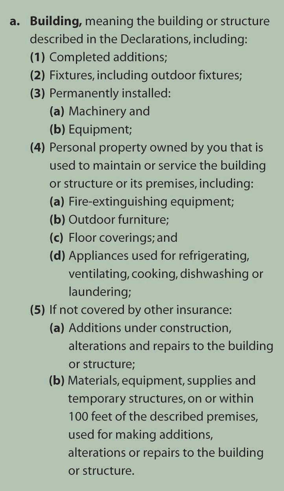
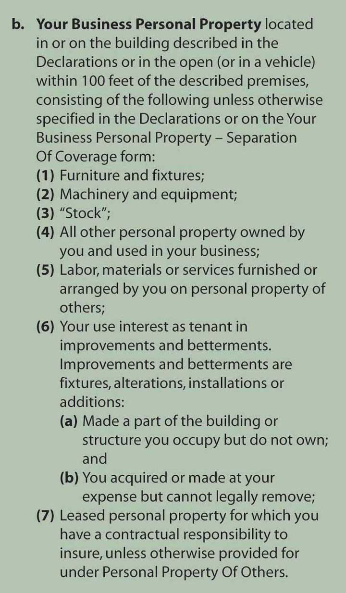
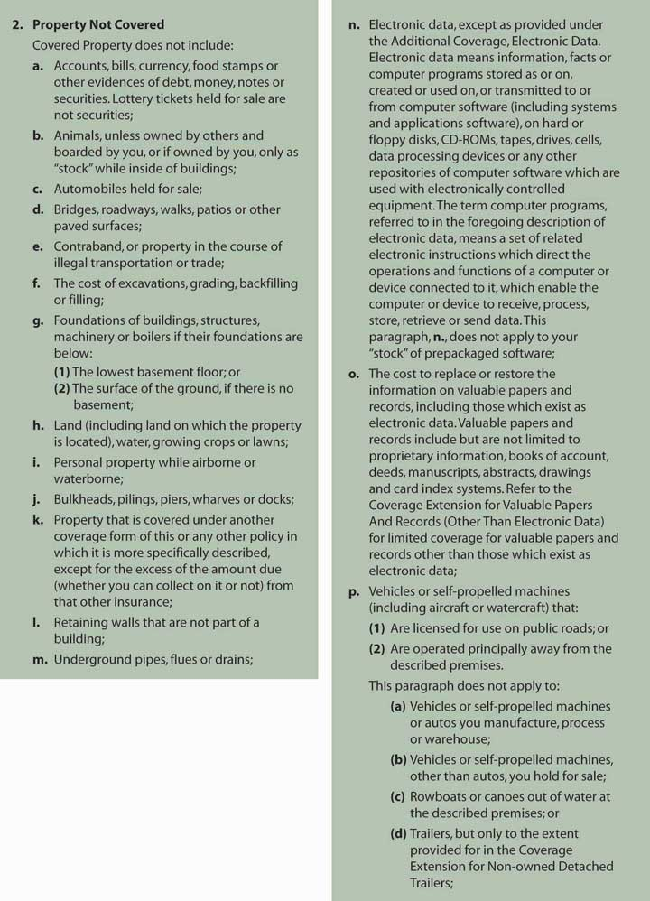
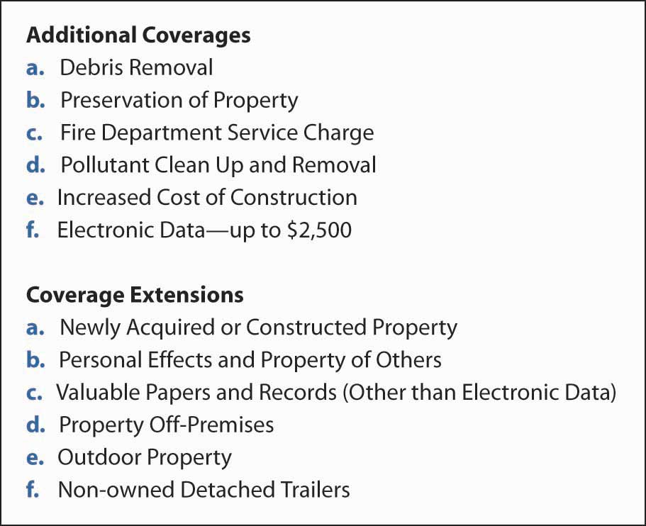
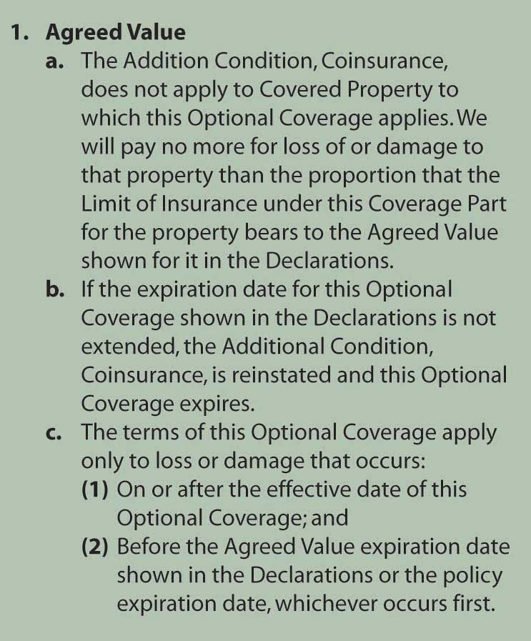
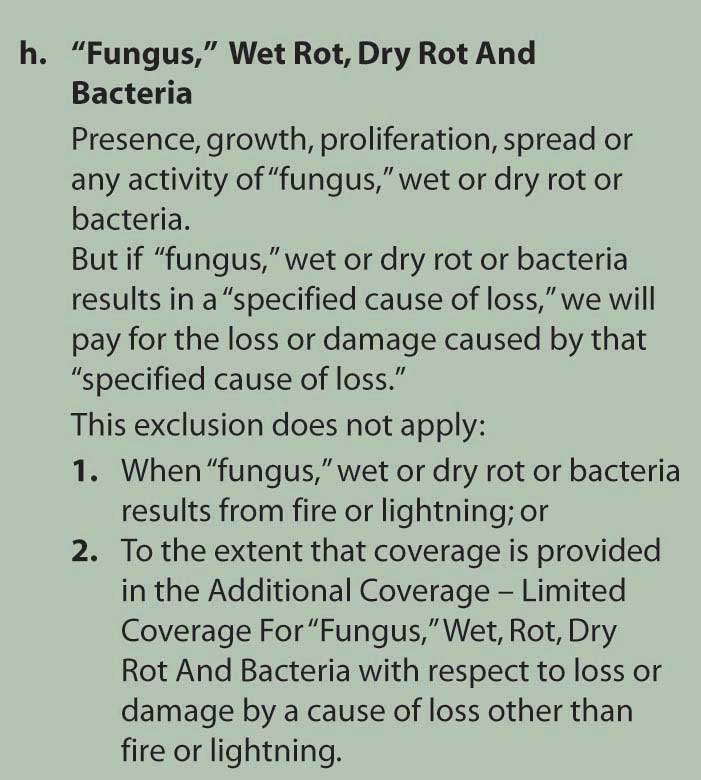
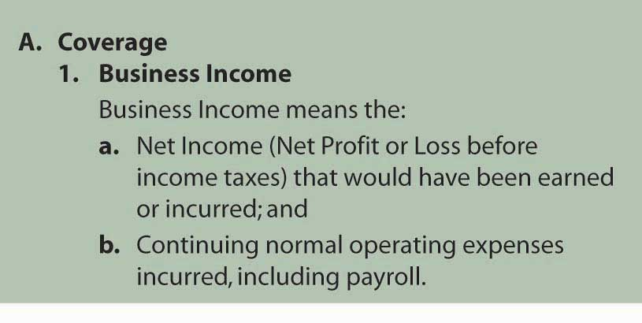
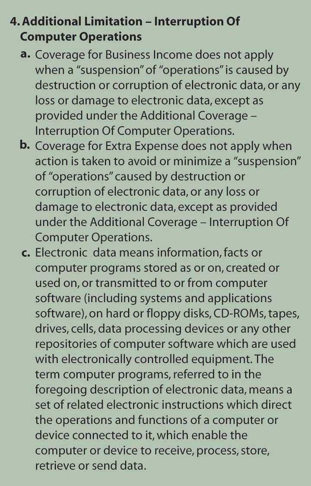

In this section we elaborate on the following commercial property insurance solutions:
The commercial package policy (CPP) program was started by the Insurance Services Office (ISO) in 1986. Every policy includes three standard elements: the cover page, common policy conditions, and common declarations (shown in Figure 15.1 "Links between the Holistic Risk Puzzle and Commercial Insurance"). It is important to elaborate on the declaration page because it provides a visual aid of the various coverages that can be selected by a business, depending on needs. Some businesses may not need specific parts of the package, but all the elements are listed for the choice of the potential insured. More specifically, the package may include the following commercial coverage elements: boiler and machinery, capital assets program, commercial automobile, commercial general liability, commercial inland marine, commercial property, crime and fidelity, employment-related practices liability, farm liability, liquor liability, pollution liability, and professional liability. Some of these coverages were discussed in prior chapters. The rest of the coverages will be described here.
Most commercial organizations have similar property exposures. Common business property exposures, along with business income exposures, can be insured through the commercial property policyPolicy that provides insurance for direct physical loss to business property and income. form of the commercial package policy. The liability module of the commercial package policy is the commercial general liability (CGL) policyThe liability module of the commercial package policy.. It replaced the liability coverage previously available through the comprehensive general liability policy. In 1986, the CGL was made part of the new modular approach introduced by the ISO in the form of the CPP.
The commercial property policy form of the CPP begins with property declarations and conditions. These provisions identify the covered location, property values (and limits), premiums, deductibles, and other specific aspects of the coverage. These pages make the insurance unique for a given policyholder by identifying that policyholder’s specific exposures. The information in the declarations must be accurate for the desired protection to exist. The remainder of the commercial property coverage consists of the following:
The BPP provides coverage for direct physical loss to buildings and/or contents as described in the policy. Separate sections with distinct limits of insurance are available for both buildings and contents to account for differing needs of insureds. Some insureds will be tenants who do not need building coverage. Others will be landlords who have limited or no need for contents coverage. Many insureds, of course, will need both in varying degrees.
What constitutes a building and business personal property may appear obvious. The insurer, however, must be very precise in defining its intent because, as you know, insurance is a contract of adhesion. Ambiguities, therefore, are generally construed in favor of the insured. Figure 15.2 "Building as Defined in ISO Building and Personal Property Coverage Form (Sample)" lists the items defined as buildings. Figure 15.3 "Business Personal Property as Defined in ISO Building and Personal Property Coverage Form (Sample)" lists those items defined as business personal property.
Figure 15.2 Building as Defined in ISO Building and Personal Property Coverage Form (Sample)
Source: ISO Commercial Property Building and Personal Property Coverage Form CP 00 10 06 07. Includes copyrighted material of Insurance Services Office, Inc., with its permission.
Figure 15.3 Business Personal Property as Defined in ISO Building and Personal Property Coverage Form (Sample)
Source: ISO Commercial Property Building and Personal Property Coverage Form CP 00 10 06 07. Includes copyrighted material of Insurance Services Office, Inc., with its permission.
In addition to limiting coverage by defining building and business personal property, the BPP lists specific property that is excluded from protection. These items are listed in Figure 15.4 "Listed Property Not Covered as Defined in ISO Building and Personal Property Coverage Form (Sample)". Reasons for exclusions in insurance were discussed earlier. Note in Figure 15.4 "Listed Property Not Covered as Defined in ISO Building and Personal Property Coverage Form (Sample)" and in the corresponding section in the policy the exclusion of “electronic data, except as provided under additional coverages.” In part f (4) of Additional Coverages, discussed below and in Figure 15.5 "Additional Coverage and Coverage Extension as Listed in ISO Building and Personal Property Coverage Form", the electronic data that is covered is limited to a loss of up to $2,500 sustained in one year. The low limit on electronic equipment and data losses have propelled many businesses to buy the e-commerce endorsement discussed in Chapter 11 "Property Risk Management". This exclusion is not always noticed by businesses. To ensure adequate coverage, insurers began to offer education programs to risk managers about their cyber-risk exposures.
Figure 15.4 Listed Property Not Covered as Defined in ISO Building and Personal Property Coverage Form (Sample)
Source: ISO Commercial Property Building and Personal Property Coverage Form CP 00 10 06 07. Includes copyrighted material of Insurance Services Office, Inc., with its permission.
Figure 15.5 Additional Coverage and Coverage Extension as Listed in ISO Building and Personal Property Coverage Form
In addition to paying for repair or replacement of the listed property when caused by a covered peril, the BPP pays for other related costs. The BPP also extends coverage under specified conditions. These coverage additions and extensions are listed in Figure 15.5 "Additional Coverage and Coverage Extension as Listed in ISO Building and Personal Property Coverage Form".
The value of these additional and extended coverages can be significant. Debris removal, for example, is a cost that is often overlooked by insureds, but can involve thousands of dollars. Recent tornadoes in the midwestern United States caused heavy property damage, and for many insureds, the most significant costs involved removal of tree limbs and other debris.
An interesting additional coverage is pollutant cleanup and removalA provision that specifies the conditions under which, and the extent to which, protection for cleanup costs are paid by the insurer., a provision that specifies the conditions under which, and the extent to which, protection for cleanup costs are paid by the insurer. Because of large potential liabilities, coverage is narrowly defined as those situations caused by a covered loss, and only for losses at the described premises. The amount of available protection is also limited.
The extended coverages primarily offer protection for properties not included in the definition of covered buildings and personal property. The intent is to provide specific and limited insurance for these properties, which is why they are separated from the general provision. Newly acquired property and property of others, for instance, involve exposures distinct from the general exposures, and they require special attention in the coverage extensions. Some of the coverage extensions offer protection against loss from a short list of causes to property otherwise excluded. Outdoor equipment is an example of property otherwise excluded.
As has been discussed in prior chapters, property insurance payments may be made on either a replacement cost new (RCN) basis or an actual cash value (ACV) basis. If the insured chooses actual cash value, then the provision 7 valuation of section E, loss conditions, applies. The valuation provision involves a number of parts.A detailed description of this part of the policy is beyond the scope of this text. Parts (b) through (e) explain the insurer’s intent for valuation in situations involving RCN when ACV may be difficult to measure or inappropriate. Part (b), for instance, permits payment at RCN for relatively small losses: those valued at $2,500 or less.
If the insured chooses replacement cost new, this optional coverage must be designated in the declarations. Further, the insured ought to recognize the need for higher limits than if ACV is used. Typically, the insurer does not charge a higher rate for RCN coverage; however, more coverage is needed, which translates into a higher premium. For RCN to be paid, the insured must actually repair or replace the covered property. Otherwise, the insurer will pay on an ACV basis.
As just discussed, you need to be cautious when selecting an amount of insurance that will cover your potential losses. The insurer will not pay more than the limit of insurance, except for the coverage extensions and coverage additions (fire department charges, pollution cleanup, and electronic data). In addition to concern over having a sufficient amount of insurance to cover the value of any loss, some insureds need to worry about violation of the coinsurance provision, which is found under section F, additional conditions of the BPP. The policy provides examples of coinsurance. An example of underinsurance in the policy is provided in Table 15.1 "Example of Underinsurance in ISO Building and Personal Property Coverage Form (Sample)" below.
Table 15.1 Example of Underinsurance in ISO Building and Personal Property Coverage Form (Sample)
| Example #1 (Underinsurance) | ||
|---|---|---|
| When: | The value of the property is: | $250,000 |
| The Coinsurance percentage for it is: | 80% | |
| The Limit of Insurance for it is: | $100,000 | |
| The Deductible is: | $250 | |
| The amount of loss is: | $40,000 | |
| Step (1): | $250,000 × 80% = $200,000 | |
| (the minimum amount of insurance to meet your Coinsurance requirements) | ||
| Step (2): | $100,000 ÷ $200,000 = .50 | |
| Step (3): | $40,000 × .50 = $20,000 | |
| Step (4): | $20,000 – $250 = $19,750 | |
| We will pay no more than $19,750. The remaining $20,250 is not covered. | ||
Source: ISO Commercial Property Building and Personal Property Coverage Form CP 00 10 06 07. Includes copyrighted material of Insurance Services Office, Inc., with its permission.
The BPP policy continues to include a coinsurance provision as a major condition of coverage. For most insureds, however, there is a choice to override the coinsurance clause with an agreed value option, found in section G of optional coverages. The agreed value optionRequires the policyholder to buy insurance equal to 100 percent of the value of the property, as determined at the start of the policy. requires the policyholder to buy insurance equal to 100 percent of the value of the property, as determined at the start of the policy. If the insured does so, then the coinsurance provision does not apply and all losses are paid in full, up to the limit of insurance. The wording in the policy is shown in Figure 15.6 "Agreed Value Option in ISO Building and Personal Property Coverage Form (Sample)".
Figure 15.6 Agreed Value Option in ISO Building and Personal Property Coverage Form (Sample)
Source: ISO Commercial Property Building and Personal Property Coverage Form CP 00 10 06 07. Includes copyrighted material of Insurance Services Office, Inc., with its permission.
The agreed value option, however, does not ensure that the policyholder will have sufficient limits of insurance to cover a total loss, especially in times of high inflation. To ward off unwanted retention of loss values above the limit of insurance, the insured can purchase the inflation guard option found in section G, optional coverages (which is discussed in Chapter 13 "Multirisk Management Contracts: Homeowners"). The inflation guard optionProvides for automatic periodic increases in insurance limits; the intent is to keep pace with inflation. provides for automatic periodic increases in insurance limits; the intent is to keep pace with inflation. The amount of the annual increase is shown as a percentage in the declarations.
We have just described some major elements of the BPP form. A full understanding of the coverage requires a thorough reading and consideration of the impact of each provision. As for which perils are covered, the property section of the CPP offers three options: the basic causes of loss form, the broad causes of loss form, and the special causes of loss form.
The basic causes of loss formA named-perils option of the commercial property policy that covers eleven named perils. is a named-perils option of the commercial property policy that covers eleven named perils (see Figure 15.7 "Causes of Loss Forms, ISO Commercial Property Policy"). Some perils are defined and others are not. When exists, the common use of the term, supplemented by court opinions, will provide its meaning.
Fire, for example, is not defined because it has a generally accepted legal meaning. Insurance policies cover only certain fires. While excessive heat may be sufficient for the fire protection to apply, oxidation that results in a flame or glow is typically required. Further, the flame must be hostile, not within some intended container. For instance, if you throw something into a fireplace, intentionally or not, that fire is not hostile and the loss likely is not covered.
A review of the policy and Chapter 13 "Multirisk Management Contracts: Homeowners", where many of these same perils were discussed as they apply to homeowners coverage, may clarify which loss situations are payable on the basic causes of loss form. Review of the exclusions is just as important.
Figure 15.7 Causes of Loss Forms, ISO Commercial Property Policy

Exclusions found in the basic causes of loss form can be categorized as follows:
Most of these exclusions involve events with catastrophic potential, such as floods (the water exclusion).
The broad causes of loss formA named-perils option of the commercial property policy that covers fifteen named perils. is a named-perils option of the commercial property policy that covers fifteen named perils. It differs from the basic form in adding some perils, as listed in Figure 15.7 "Causes of Loss Forms, ISO Commercial Property Policy". Geography may dictate, to some extent, preference for the broad form because of its ice and snow coverage. Also note that the water damage peril is for the “sudden and accidental leakage of water or steam that results from the breaking or cracking of part of an appliance or system containing water or steam (not a sprinkler system).” It does not cover floods or other similar types of catastrophic water damage.
In addition to adding these perils, the broad form includes a provision to cover collapse caused by the named perils or by hidden decay; hidden insect or vermin damage; weight of people or personal property; weight of rain that collects on a roof; or use of defective materials in construction, remodeling, or renovation. While this “collapse” additional coverage does not increase the amount of coverage available (as the other additional coverages do), it does expand the list of covered-loss situations.
The mold exclusion was discussed in prior chapters. The exact wording of the exclusion is excerpted from the ISO Causes of Loss—Broad Form in Figure 15.8 "Mold Exclusion as Listed in the ISO Causes of Loss—Broad Form (Sample)".
Figure 15.8 Mold Exclusion as Listed in the ISO Causes of Loss—Broad Form (Sample)
Source: ISO Commercial Property Causes of Loss—Broad Form CP 10 20 06 07. Includes copyrighted material of Insurance Services Office, Inc., with its permission.
The additional coverage in the policy permits a coverage limit for mold for up to only $15,000, as noted in Additional Coverage—Limited Coverage For “Fungus,” Wet Rot, Dry Rot And Bacteria.
The coverage described under D.2. of this Limited Coverage is limited to $15,000. Regardless of the number of claims, this limit is the most we will pay for the total of all loss or damage arising out of all occurrences of Covered Causes of Loss (other than fire or lightning) and Flood which take place in a 12-month period (starting with the beginning of the present annual policy period). With respect to a particular occurrence of loss which results in ‘fungus,’ wet or dry rot or bacteria, we will not pay more than a total of $15,000 even if the ‘fungus,’ wet or dry rot or bacteria continues to be present or active, or recurs, in a later policy period.ISO Commercial Property Causes of Loss—Broad Form CP 10 20 06 07. Includes copyrighted material of Insurance Services Office, Inc., with its permission.
Business income coverage will be discussed in the next section. For now, it is important to note that, under the mold exclusion and extension of coverage, business interruption income is provided for only thirty days. The days do not need to be consecutive.
Returning to the topic of cause of loss, it is very important to have a clear definition of what is considered a cause of loss for the limits of coverage. Whether or not the peril caused one loss or two separate losses is imperative in understanding the policy. A case in point is that of the complex decisions regarding whether the loss of the two World Trade Center buildings was one loss or two separate losses from two separate causes of loss. The stakes were very high, at $3.5 billion of limit. To understand the issue more clearly, see the box “Liability Limits: One Event or Two?”
Did the September 11 terrorist attacks on the World Trade Center constitute one loss or two? The resolution to this question is far from simple. Controversy surrounding this issue illustrates the ambiguities inherent in some business insurance contracts.
When the two hijacked airplanes struck the World Trade Center towers on the morning of September 11, 2001, the insurance and reinsurance contracts for the property were still under binder agreements. Thus, the wording of the binder agreements became the central issue of this case. At the time of the attacks, real estate executive Larry A. Silverstein’s company had only recently acquired a ninety-nine-year lease on the World Trade Center and had not yet finalized insurance coverage, which provided up to $3.5 billion in property and liability damage per occurrence. With policies of such size, which have large reinsurance requirements, it is not uncommon for the final policies not to be in place when the insured begins operations.
The United Kingdom-based reinsurer Swiss Re had agreed to underwrite 22 percent of coverage on the property once the loss exceeded $10 million, translating into $3.5 billion per occurrence in this case. After the attacks, Swiss Re argued that its preliminary agreement with the lessee defined occurrence as “all losses or damages that are attributable directly or indirectly to one cause or one series of similar causes” and that “all such losses will be added together and the total amount of such losses will be treated as one occurrence irrespective of the period of time or area over which such losses occur.” Silverstein, however, argued that each of the airplane crashes was a separate occurrence and his company was due more than $7 billion for the two attacks.
The fuzziness of the language has been very problematic. This led to two opposing verdicts in separate court cases. In Phase I, the insurers prevailed. In Phase II, Silverstein did. The first jury found that “the form used by broker Willis Group Holdings Ltd., rather than a rival form used by Travelers or other forms, and that the Willis form, known as WilProp 2000, had specific language that defined what happened to the World Trade Center as a single occurrence.” Under this WilProp form, occurrence means “all losses or damages that are attributable directly or indirectly to one cause or to one series of similar causes. All such losses are added together and the total amount of such losses is treated as one occurrence irrespective of the period of time or area over which such losses occur.”
In the second case, the jury agreed with Silverstein that there were two occurrences, at least as defined by the temporary insurance agreements that bound the group of insurers that were involved in the second case. As a result of the second ruling, Silverstein had an open door to collect “as much as twice the $1.1 billion aggregate insured amount per occurrence for which the nine insurers were liable.”
These two contradictory rulings stem from three tests:
The World Trade Center cases were heard in a federal court—the U.S. District Court for the Southern District of New York in Manhattan. Ultimately, however, the matter was settled out of court. In March of 2007, New York Insurance Superintendent Eric Dinallo requested that two representatives from Silverstein Properties and each of the seven insurers involved in the WTC settlement dispute attend a meeting with the state insurance department to bring closure to the ongoing litigation. After weeks of tense negotiations, then-New York Governor Eliot Spitzer and Superintendent Dinallo announced on May 23, 2007, that an agreement between the parties had been successfully brokered. Travelers, Zurich, Swiss RE, Employers Insurance of Wausau, Allianz Global, Industrial Risk Insurers, and Royal Indemnity Company agreed to settle all outstanding court cases and related proceedings for a total of $2 billion. Spitzer and Dinallo described this as the largest settlement in regulatory history. Specific amounts paid each company were not disclosed due to confidentiality agreements. The resolution to this dispute removes the last major obstacle to World Trade Center redevelopment as planned by Silverstein Properties and the New York and New Jersey Port Authority.
To address the underlying problem in the long-delayed loss settlement, Superintendent Dinallo issued a bulletin on October 16, 2008, requiring insurers to provide contract certainty for coverage agreements. This contract certainty called for contract language in insurance policies to be firmed up within thirty days of issuance and the delivery of the policy before, on, or promptly after the policy’s inception date. This would ensure that policy provisions, like the question as to whether the destruction of the twin towers was one insured event or two, are definitively established before a loss. Insurance carriers were given twelve months from the date of Dinallo’s bulletin to bring policies and procedures into compliance with the rule. When asked by the Risk and Insurance Management Society (RIMS) what would happen if carriers failed to meet the compliance deadline, the New York Insurance Department responded that it would “consider regulations spelling out more detailed rules. Regulations have the force of law and penalties can be assessed on licensees.” Willis Group Holdings Chairman and CEO Joe Plumeri praised the contract certainty rule, saying, “There is absolutely no excuse for policies to be delivered months after their inception, an all too commonplace practice in this business.… We’re in the business of keeping promises, and the insurance industry as a whole can do no less. We believe that the industry should police itself, take a principled approach to doing business, and adopt these measures as soon as possible.”
The protracted settlement of the World Trade Center destruction provides a high-profile example of the problems that can arise due to uncertain policy terms. This is not typically an issue with most insurance policies written on standardized forms approved by the state insurance department. In the case of large commercial clients, excess and surplus lines, and reinsurance markets, however, it is likely to come up due to complexity of business scope, degree of risk, and lack of regulatory authority. Should the contract certainty rule in New York prove successful in curtailing disputes, RIMS anticipates that additional states will follow suit in passing similar requirements.
Questions for Discussion
Sources: E. E. Mazier, “Swiss Re Presses ‘One Attack’ Theory,” National Underwriter, Property & Casualty/Risk & Benefits Management Edition, October 29, 2001; E. E. Mazier, “Experts View Swiss Re WTC Lawsuit as Unprecedented Legal Quagmire,” National Underwriter Online News Service, October 31, 2001; Mark E. Ruquet, “Insurers to Lose WTC Case: Agent Univ.,” National Underwriter Online News Service, July 22, 2002; E. E. Mazier, “Judges Sends WTC Claim to Jury Trial,” National Underwriter, Property & Casualty/Risk & Benefits Management Edition, June 10, 2002; E. E. Mazier, “Judge Rules WTC Terror Is One Event,” National Underwriter Online News Service, September 25, 2002; E. E. Mazier, “Swiss Re Silverstein WTC Case in Shambles,” National Underwriter Online News Service, September 27, 2002; “Tale of Two Trials: Contract Language Underlies Contradictory World Trade Center Verdicts,” BestWire, December 9, 2004, accessed March 27, 2009, http://www3.ambest.com/Frames/FrameServer.asp?AltSrc=23&Tab=1&Site=news&refnum=70605; Mark E. Ruquet, “Spitzer Spearheads $2 Billion WTC Insurance Settlement,” National Underwriter, Property & Casualty/Risk & Benefits Management Edition, May 23, 2007, accessed March 29, 2009, www.property-casualty.com/News/2007/5/Pages/Spitzer-Spearheads--2-Billion-WTC-Insurance-Settlement.aspx; Mark E. Ruquet, “WTC Deal Gets Dinallow Off on Right Foot,” National Underwriter, Property & Casualty/Risk & Benefits Management Edition, June 18, 2007, accessed March 29, 2009, www.property-casualty.com/Issues/2007/24/Pages/WTC-Deal-Gets-Dinallo-Off-On-Right-Foot.aspx; Daniel Hays, “New N.Y. Regulation Calls For Policy Contract Certainty,” National Underwriter, Property & Casualty/Risk & Benefits Management Edition, October 16, 2008, accessed March 29, 2009, www.property-casualty.com/News/2008/10/Pages/New-N-Y--Regulation-Calls-For-Policy-Contract-Certainty.aspx; Daniel Hays, “RIMS Reacts to N.Y. Contract Certainty Regulation,” National Underwriter, Property & Casualty/Risk & Benefits Management Edition, October 22, 2008, accessed March 29, 2009, www.property-casualty.com/News/2008/10/Pages/RIMS-Reacts-To-N-Y--Contract-Certainty-Regulation.aspx; Mark E. Ruquet, “Willis CEO Applauds N.Y. Move On Contract Certainty,” National Underwriter, Property & Casualty/Risk & Benefits Management Edition, October 17, 2008, accessed March 29, 2009, http://www.property-casualty.com/News/2008/10/Pages/Willis-CEO-Applauds-N-Y--Move-On-Contract-Certainty.aspx; See all media coverage at the end of 2004 and afterward.
The special causes of loss formAn open perils or all risk coverage option for the commercial property policy. is an open perils or all risk coverage option for the commercial property policy. That is, instead of listing those perils that are covered, the special form provides protection for all causes of loss not specifically excluded. In this form, then, the exclusions define the coverage. Remember that all those exclusions listed in the basic form, except for the “other” category and some aspects of the water damage exclusion, apply to the special form.
Most of the additional exclusions found in the special form relate either to catastrophic potentials or to nonfortuitous events. Among the catastrophe exclusions are boiler or machinery explosions. Nonfortuitous exclusions relate to items such as wear and tear, smoke from agricultural smudging, and damage to a building interior caused by weather conditions, unless the building exterior is damaged first.
Some experts believe that the greatest benefit of the special form over the broad form is coverage against theft. You may recall that theft is not a listed peril in the broad or the basic form. Coverage of theft from any cause, however, is too costly for most policyholders. The special form, therefore, includes some limitations on this protection. For instance, employee dishonesty and loss of property that appears to have been stolen but for which there is no physical evidence of theft (“mysterious disappearance”) are not covered. In addition, certain types of property such as patterns, dyes, furs, jewelry, and tickets are covered against theft only up to specified amounts. The special form also provides coverage for property in transit.
In addition to the cost of repairing and/or replacing damaged or lost property, a business is likely to experience some negative consequences of being unable to use the damaged or lost property, which was noted in previous chapters. Those negative consequences typically involve reduced revenues (sales) or increased expenses, both of which reduce net income (profit). The commercial property policy provides coverage for net income losses through the business income coverage (BIC)Protects against both business interruption and extra expense losses. form. The BIC protects against both business interruption and extra expense losses.
When operations shut down (are interrupted) because of loss to physical property, a business likely loses income. The definition of business income in the BIC is provided in Figure 15.9 "Business Income as Defined in the ISO Business Income (and Extra Expense) Coverage Form (Sample)".
Figure 15.9 Business Income as Defined in the ISO Business Income (and Extra Expense) Coverage Form (Sample)
Source: ISO Commercial Property Business Income (and Extra Expense) Coverage Form CP 00 30 06 07. Includes copyrighted material of Insurance Services Office, Inc., with its permission.
Normal operating expenses are those costs associated with the activity of the business, not the materials that may be consumed by the business. Included among operating expenses are payroll, heat and lighting, advertising, and interest expenses.
The intent of the BIC is to maintain the insured’s same financial position with or without a loss. Payment, therefore, does not cover all lost revenues because those revenues generally cover expenses, some of which will not continue. Yet because some expenses continue, coverage of net income alone is insufficient. An example of a BIC loss is given in “Business Income Coverage (BIC) Hypothetical Loss.”
It is important to note the wording in the policy. The coverage applies only to business interruption for damages to the property in the declaration. More specifically, the policy states,
We will pay for the actual loss of Business Income you sustain due to the necessary ‘suspension’ of your ‘operations’ during the ‘period of restoration.’ The ‘suspension’ must be caused by direct physical loss of or damage to property at premises which are described in the Declarations and for which a Business Income Limit of Insurance is shown in the Declarations. The loss or damage must be caused by or result from a Covered Cause of Loss. With respect to loss of or damage to personal property in the open or personal property in a vehicle, the described premises include the area within 100 feet of the site at which the described premises are located.ISO Commercial Property Business Income (and Extra Expense) Coverage Form CP 00 30 06 07. Includes copyrighted material of Insurance Services Office, Inc., with its permission.
Under this policy, businesses that sustained losses because of the economic backlash and fear after September 11, 2001, would not be covered for their loss of income. For discussion of this issue, read the box “Business Interruption with and without Direct Physical Loss” in Chapter 11 "Property Risk Management".
As noted above in the discussion of the BPP policy, this part of the commercial package also limits coverage for interruption to computer operations under Section 4, as presented in Figure 15.10 "Interruption of Computer Operations Coverage Limitation in the ISO Business Income (and Extra Expense) Coverage Form (Sample)".
Figure 15.10 Interruption of Computer Operations Coverage Limitation in the ISO Business Income (and Extra Expense) Coverage Form (Sample)
Source: ISO Commercial Property Business Income (and Extra Expense) Coverage Form CP 00 30 06 07. Includes copyrighted material of Insurance Services Office, Inc., with its permission.
In Additional Coverage, the amount available for interruption of computer operation is $2,500. No wonder many businesses today purchase the e-commerce endorsement or buy the new policies from the companies described in Chapter 11 "Property Risk Management" and Chapter 12 "The Liability Risk Management".
In addition to losing sales, a business may need to incur various expenses following property damage in order to minimize further loss of sales. These extra expenses are also covered by the BIC. A bank, for example, could not simply shut down operations if a fire destroyed its building because the bank’s customers rely on having ready access to financial services. As a result, the bank is likely to set up operations at a temporary location (thus reducing the extent of lost revenues) while the damaged property is being repaired. The rent at the temporary location plus any increase in other expenses would be considered covered extra expenses.
The same three perils options available for the BPP are also available for the BIC. Because the BIC requires that the covered income loss results from direct physical loss or damage to property described in the declarations, most insureds choose the same causes of loss form for both the BPP and the BIC. Now, we show a more detailed example of a hypothetical loss that occurred during the Chicago flood in 1992.
In the spring of 1992, Chicago experienced an unusual flood apparently caused by damage to an underground tunnel system. Many firms were required to shut down offices in the damaged area. Among them were large accounting organizations, just two weeks before the tax deadline of April 15. Thus, the losses were magnified by the fact that the flood occurred during the tax season. Assume the following hypothetical conditions for one of those firms.
| Preloss Financial Information | |
|---|---|
| Average monthly revenues | $500,000 |
| Average April revenues (stated in 1992 dollars) | $700,000 |
| Average monthly payroll | $300,000 |
| Average April payroll | $550,000 |
| Monthly heat, electricity, water | $25,000 |
| Monthly rent for leased office | $45,000 |
| Monthly interest expense | $10,000 |
| Monthly marketing expense | $15,000 |
| Monthly other expenses | $10,000 |
| Net income in April | $45,000 |
| Postloss Financial Information for April 1992 | |
|---|---|
| Revenues | $600,000 |
| Payroll | $540,000 |
| Utilities | $30,000 |
| Rent on downtown space | $0 |
| Rent for temporary space | $50,000 |
| Interest expense | $10,000 |
| Marketing expense | $22,000 |
| Other expenses | $20,000 |
| Net loss | ($72,000) |
This firm experienced both a reduction in revenue and an increase in expenses. The resulting profit (net income) loss is the covered loss in the BIC. For this example, the loss equals $117,000, the sum of the income not received ($45,000) that would have been expected without a loss, plus the actual lost income ($72,000) incurred. Such a substantial loss for a two-week period is not unusual.
The coinsurance provision of the BIC is one of the more confusing parts of any insurance policy. Its purpose is the same as that discussed earlier, which is to maintain equity in pricing. Its application is also similar. The difficulty comes in defining the underlying value of the full exposure, which is needed to apply any coinsurance provision. Following in Table 15.2 "Example of Underinsurance in ISO Business Income (and Extra Expense) Coverage Form (Sample)" is an underinsurance example from a BIC policy. More examples are provided in the policy sample.
Table 15.2 Example of Underinsurance in ISO Business Income (and Extra Expense) Coverage Form (Sample)
| Example #1 (Underinsurance) | ||
|---|---|---|
| When: | The Net Income and operating expenses for the 12 months following the inception, or last previous anniversary date, of this policy at the described premises would have been: | $400,000 |
| The Coinsurance percentage is: | 50% | |
| The Limit of Insurance is: | $150,000 | |
| The amount of loss is: | $80,000 | |
| Step (1): | $400,000 × 50% = $200,000 | |
| (the minimum amount of insurance to meet your Coinsurance requirements) | ||
| Step (2): | $150,000 ÷ $200,000 = .75 | |
| Step (3): | $80,000 × .75 = $60,000 | |
| We will pay no more than $60,000. The remaining $20,000 is not covered. | ||
Source: ISO Commercial Property Business Income (and Extra Expense) Coverage Form CP 00 30 06 07. Includes copyrighted material of Insurance Services Office, Inc., with its permission.
Remember that a BIC loss equals net income plus continuing operating expenses. Coinsurance, however, applies to net income plus all operating expenses, a larger value. The amount of insurance required to meet the coinsurance provision is some percentage of this value, with the percentage determined by what the insured expects to be the maximum period of interruption. If a maximum interruption of six months is expected, for example, the proper coinsurance percentage is 50 percent (6/12). If it is nine months, a coinsurance percentage of 75 percent (9/12) is appropriate.
Because of the complexity of the coinsurance provision, however, many insureds choose an agreed value option. This option works under the same principles as those discussed with regard to the BPP. Using the example illustrated in “Business Income Coverage (BIC) Hypothetical Loss,” we can demonstrate the application of the coinsurance provision. Coinsurance requirements apply to net income plus operating expenses ($95,000 plus $405,000 per month on average, or $6,000,000 for the year). If a 50 percent coinsurance provision is used because the expected maximum period of interruption is six months, then the amount of insurance required is $3,000,000 (0.50 × $6,000,000). If the April figures are representative (which is really not the case with a tax accounting office), then a six-month interruption would result in a much lower loss.
The BIC includes a number of options designed to modify coverage for the insured’s specific needs. Three options that affect the coinsurance provision are the monthly limit of indemnity, maximum period of indemnity, and payroll endorsements. For better understanding, the student is invited to read the policy in addition to reading the following explanations.
The monthly limit of indemnityNegates the coinsurance provision of business income coverage; instead, a total limit is listed, as is the percentage of that limit available each month. negates the coinsurance provision of business income coverage; instead, a total limit is listed, as is the percentage of that limit available each month. The policy uses the example of a $120,000 limit and ¼ monthly amount. For this example, only $30,000 (¼ × $120,000) is available each month. An organization with stable earnings and expectations of a short period of restoration would likely find this option worthwhile.
The maximum period of indemnityOption also negates the coinsurance provision of the BIC; instead, this option limits the duration of coverage to 120 days (or until the limit is reached, whichever comes first). option also negates the coinsurance provision of the BIC; instead, this option limits the duration of coverage to 120 days (or until the limit is reached, whichever comes first). Both the maximum period of indemnity and the monthly limit of indemnity address the fact that the standard policy cannot be used with a coinsurance provision of less than 50 percent (six months).
Instead of negating the coinsurance provision, as do the two options just discussed, the payroll endorsementAllows the insured to deduct some or all payroll expenses from the value of operating expenses before calculating the coinsurance requirement. allows the insured to deduct some or all payroll expenses from the value of operating expenses before calculating the coinsurance requirement. Doing so allows the insured to purchase less insurance (and usually pay lower premiums) and still meet the coinsurance provision. It also excludes payroll from covered expenses, however, so the insured must feel confident that payroll would not be maintained during a shutdown. A common payroll endorsement includes ninety days of payroll expense in the coinsurance calculation (and BIC coverage), assuming that a short shutdown might allow the insured to continue to pay employees. For a longer shutdown, termination of employment might be more cost effective.
In this section you studied the commercial package policy (CPP) and the commercial property component of the CPP:
| Preloss Financial Information | |
|---|---|
| Average monthly revenues | $220,000 |
| Average monthly payroll | $100,000 |
| Monthly heat, electricity, water | $25,000 |
| Monthly rent for leased office | $25,000 |
| Monthly interest expense | $10,000 |
| Monthly marketing expense | $5,000 |
| Monthly other expenses | $5,000 |
| Postloss Financial Information for One Month | |
|---|---|
| Revenues | $170,000 |
| Payroll | $100,000 |
| Utilities | $30,000 |
| Rent on leased office | $0 |
| Rent for temporary space | $50,000 |
| Interest expense | $0 |
| Marketing expense | $6,000 |
| Other expenses | $12,000 |
Assume that the Steinman Shoe Station owns the $1 million building in which it operates, maintains inventory and other business properties in the building worth $700,000, and often has possession of people’s property up to a value of $50,000 while they are being repaired. For each of the following losses, what, if anything, will Steinman’s BPP insurer pay? Limits are $1 million on coverage A and $800,000 on coverage B. The broad causes-of-loss form is used and there was no e-commerce endorsement. Explain your answers.
Steinman also bought a BIC with a limit of $250,000 and a 50 percent coinsurance clause. No other endorsements are used. A limited income statement for last year is shown below.
| Revenues | $2,000,000 |
|---|---|
| Less: | |
| Cost of goods sold | $800,000 |
| Utilities | $200,000 |
| Payroll | $400,000 |
| Other expenses | $300,000 |
| $1,700,000 | |
| Profit | $300,000 |